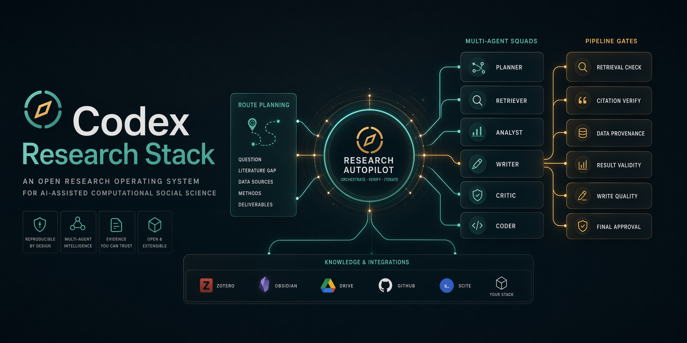

你会拿到什么
- 执行前 route 解释
- 项目型多智能体编排
- 研究 pipeline gate
- 公开项目脚手架模板
- `research-autopilot` 插件资产

git clone https://github.com/avefield509-lang/codex-research-stack.git
cd codex-research-stack
pwsh -ExecutionPolicy Bypass -File ".\scripts\init-research-project.ps1" -Path ".\examples\demo-project"
python .\scripts\validate_subagent_registry.py
python .\scripts\validate_agents_contract.py
python .\scripts\validate_research_pipeline.py
python .\scripts\validate_research_stack.py